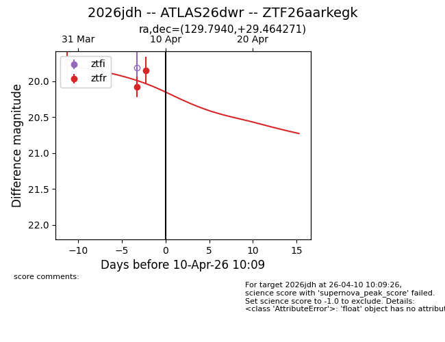
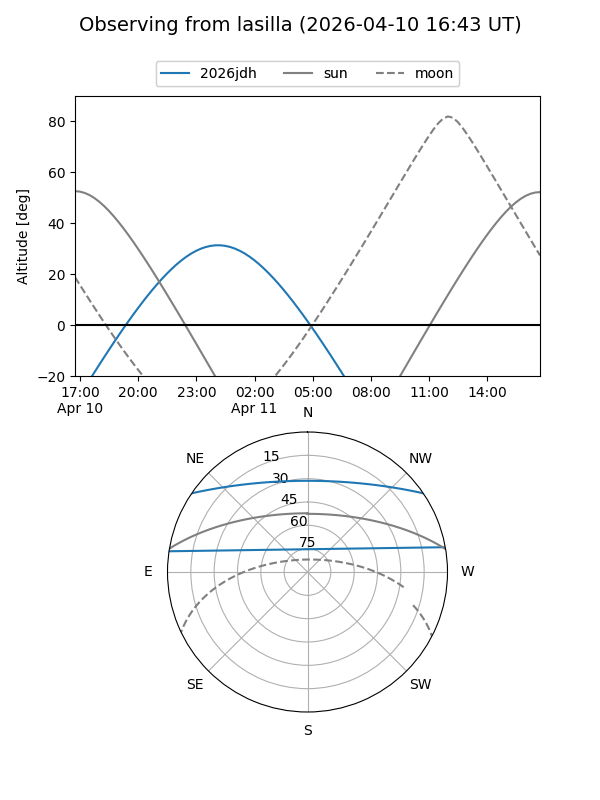
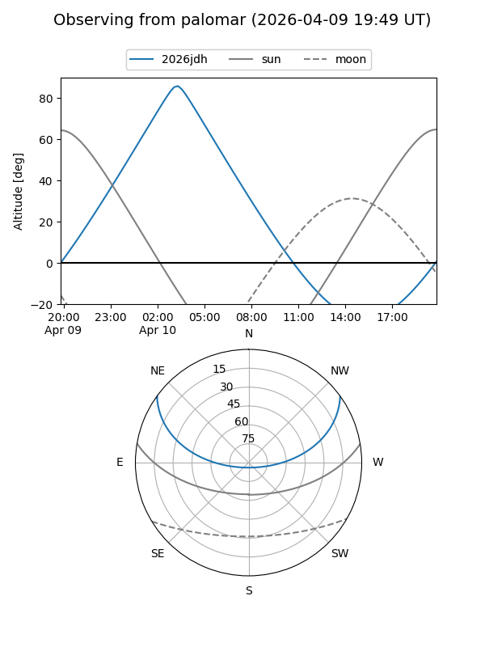
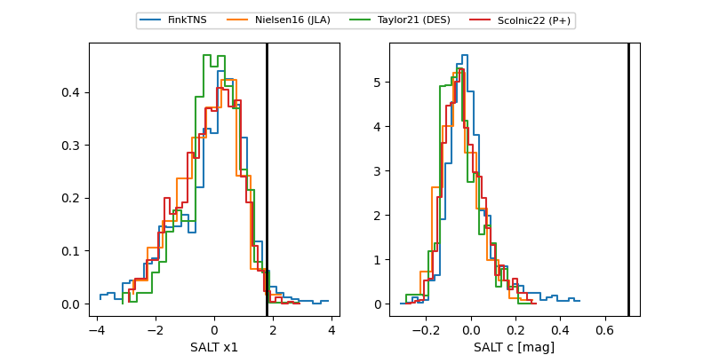

2026jdh
Target 2026jdh at 2026-04-10 10:18
Aliases and brokers:
FINK: link
Lasair: link
ALeRCE: link
TNS: link
YSE: link
alt names
ZTF26aarkegk (ztf,fink_ztf)
2026jdh (tns,yse)
ATLAS26dwr (atlas)
Coordinates:
equatorial (ra, dec) = 129.7940,+29.46427
equatorial (HMS+DMS) = 08:39:10.56,+29:27:51.38
galactic (l, b) = (194.5504,+35.11982)
Flags:
Photometry:
last ztfr=19.85
2 ztfr detections
Lightcurve

Visibility


Additional plots
